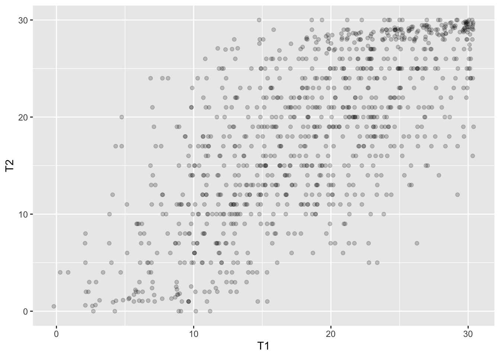

Rzetelność - jak dobrze test mierzy to, co mierzy
Małgorzata Basińska
Cel zajęć
Po zajęciach powinniście umieć
- podać definicję rzetelności
- wytłumaczyć, o co chodzi z błędem i wynikiem prawdziwym w myśl klasycznej teorii testów
- wskazać źródła błędu w pomiarze testowym
- wskazać metodę badania rzetelności odpowiednią dla danego testu i sytuacji testowej
- obliczyć rzetelność testu z wykorzystaniem wybranych wzorów
- ocenić rzetelność indywidualnego wyniku testowego
Plan
- Klasyczna teoria testów - podstawy
- Źródła błędu i metody ich oceny
- Liczymy rzetelność! (na różne sposoby)
- Teoria uniwersalizacji
- Podsumowanie zajęć i zadanie domowe
- Liczymy przedziały ufności dla wyniku otrzymanego i prawdziwego
Po co nam wiedza o rzetelności?
- informacje o wynikach uzyskanych przez pacjentów/klientów w testach są nieodłączną częścią pracy psychologa
- odpowiedzialne korzystanie z takich informacji wymaga wiedzy:
- o tym, że wynik testu nie odzwierciedla idealnie poziomu danej cechy u badanego
- jak interpretować wynik testowe korzystając z wiedzy o rzetelności i błędzie pomiaru
- dzięki dorobkowi psychometrii w tym zakresie testy psychologiczne stają się coraz dokładniejszymi narzędziami pomiaru
Klasyczna teoria testów
Definicja rzetelności wg S. Urbiny (Urbina, 2014)
Rzetelność to właściwość wyników testowych
sugerująca, że są one wystarczająco stabilne
i wolne od błędu pomiaru by były użyteczne.
Definicja rzetelności wg Standardów (AERA, APA, & NCME, 2007)
Stopień, w jakim wyniki testowe otrzymane dla
grupy osób są stabilne oraz nie zmieniają się
w kolejnych badaniach tym samym testem;
mogą być uznane za powtarzalne i rzetelne
dla osoby badanej; także stopień, w jakim wyniki testowe są wolne
od błędu pomiaru dla danej grupy.
Burza mózgów!
- Czy istnieje idealne narzędzie pomiarowe?
- Idealne narzędzie pomiarowe - czyli jakie?
- Co składa się na wynik uzyskany w teście?
- Co to jest wynik prawdziwy?
Pytanie
Czy istnieje idealne narzędzie pomiarowe?
Takie, które daje pomiar nieobarczony błędem?
Co składa się na wynik uzyskany w teście

Co to jest wynik prawdziwy - jak go sobie wyobrazić?
Hipotetyczny wynik idealnie odzwierciedlający poziom mierzonej cechy u osoby badanej, czytaj: nieobarczony błędem.
Co to jest wynik prawdziwy w myśl klasycznej teorii testów
Wynik osoby badanej, gdybyśmy przebadali ją tym samym testem nieskończoną liczbę razy.
Założenia klasycznej teorii testów
- \(X_O=X_t+X_e\) (na wynik obserwowany składa się wynik prawdziwy i błąd)
- Błąd ma charakter losowy, więc:
- Gdybyśmy badali tę samą osobę danym testem nieskończenie wiele razy, to średni błąd wynosiłby 0
- Korelacja błędu i wyniku prawdziwego wynosi 0
- W dwóch kolejnych badaniach tym samym testem korelacja błędu wynosi zero
Błąd losowy vs błąd systematyczny
- Za każdym razem kiedy się ważysz waga dodaje 1 kg - jaki to błąd?
- Zmierzyłeś wysokość swojego pokoju przykładając centymetr krawiecki do ściany. Zrobiłeś to 10 razy i za każdym razem uzyskałeś trochę inny wynik - jaki to błąd?
Definicja rzetelności wzorem
\[r_{xx}=\frac{s^2_t}{s^2}\]
\[s^2=s^2_t+s^2_e\]
Jakie są źródła błędu podczas testowania (McIntire & Miller, 2007)(Urbina, 2014)
- kontekst przeprowadzenia testu
- ocena testu
- osoby badane
- konstrukcja testu (test sam w sobie)
Rzetelność a różnice między oceniającymi
Rzetelność a różnice między oceniającymi
- PRZYKŁAD:
- Test, który wymaga wprawy w ocenie - jakie znacie testy tego typu?
- JAK OSZACOWAĆ RZETELNOŚĆ:
- Korelacja pomiędzy ocenami dwóch różnych sędziów
- Kappa Cohena
Kappa Cohena
- \(\kappa=\frac{p_o-p_c}{1-p_c}\)
- Gdzie:
- \(p_o\) - proporcja obserwowana wystąpienia zgodnych próbek
- \(p_c\) - proporcja oczekiwana wystąpienia zgodnych próbek
Liczymy!
- \(\kappa=\frac{p_o-p_c}{1-p_c}\)
- Sędzia 1:Tak|Tak|Nie|Tak|Nie|Tak|Tak|Tak|
- Sędzia 2:Tak|Nie|Tak|Tak|Nie|Nie|Tak|Nie|
Tabelka z liczebnościami
| S1 Tak | S1 Nie | |
|---|---|---|
| S2 Tak | 3 | 1 |
| S2 Nie | 3 | 1 |
Jak to policzyć?
- proporcja odpowiedzi “tak” dla S1: 0,75
- proporcja odpowiedzi “tak” dla S2: 0,5
- proporcja oczekiwana dla zgodnych odpowiedzi “tak”: 0,75 x 0,5=0,375
- proporcja oczekiwana dla zgodnych odpowiedzi “nie”: 0,25 x 0,5 = 0,125
- obserwowana proporcja odpowiedzi zgodnych 0,5
- wynik: 0 (przy wartościach od -1 do 1)
Do zastanowienia się…
- Czy współczynnik zgodności podany w podręczniku testowym będzie wyższy czy niższy od współczynnika zgodności oszacowanego dla dwóch sędziów, którzy uczą się dopiero oceniać test?
Rzetelność a próbkowanie czasu: test-retest
Rzetelność a próbkowanie czasu
- PRZYKŁAD:
- test badający cechę, która z założenia jest stabilna w czasie - znacie taki test?
- JAK OSZACOWAĆ RZETELNOŚĆ:
- technika test-retest
- korelacja między wynikami dwukrotnie przeprowadzonego testu
O co chodzi z sigmą
\(\sum_{i=1}^{n} x_i\)
Gdzie:
n - liczebność zbioru - może to być zbiór osób badanych, pozycji testowych itp.
\(x_i\) - i-ty obiekt w zbiorze
Powyższe wyrażenie można rozwinąć tak:
\(x_1+x_2...+x_i+...+x_n\)
Inne znaczki matematyczne
\(\bar{x}\) - średnia zmiennej x
Przykład
- Badamy stabilność czasową wyników SES Rosenberga metodą test - retest.
- Wyniki w teście podczas pierwszego pomiaru oznaczamy jako T1.
- Wyniki w teście podczas drugiego pomiaru oznaczamy jako T2.
- Uwaga: wyniki dla retestu w podanym przykładzie zostały wygenerowane losowo. Proszę nie traktować ich poważnie :)
Dane
| N | T1 | T2 |
|---|---|---|
| 1 | 16 | 17 |
| 2 | 35 | 34 |
| 3 | 13 | 10 |
| .. | .. | .. |
| n | .. | .. |
Jak to policzymy???
Współczynnik korelacji Pearsona dla wyników pierwszego (test) i drugiego (retest) pomiaru.
\[r_{tt}=\frac{\sum_{i=1}^n(\bar{t_1}-t_{1i})(\bar{t_2}-t_{2i})}{\sqrt{\sum_{i=1}^{n}(\bar{t_{1i}}-t_{1i})^2} \sqrt{\sum_{i=1}^{n}(\bar{t_2}-t_{2i})^2}}\]
0 - dwa identyczne pomiary

\(r_{tt}=1\)
I - dodane trochę błędu do drugiego pomiaru

\(r_{tt}=0.8906881\)
II - dodane więcej błędu do drugiego pomiaru

\(r_{tt}=0.7064398\)
III - całkowicie losowe wyniki w drugim pomiarze

\(r_{tt}=-0.009529104\)
Rzetelność a dobór treści
Rzetelność a dobór treści 1
- PRZYKŁAD:
- test oceniający świadomość zdrowotną, przeprowadzony w grupie studentów, którzy niedawno brali udział w programie edukacyjnym dotyczącym żywienia
- JAK OSZACOWAĆ RZETELNOŚĆ:
- współczynnik równoważności międzypołówkowej
- korelacja między połówkami testu
- ważne pytanie: jak dzielić test na połowy??
Wzór Spearmana-Browna dla połówek testu
Do szacowania rzetelności całego testu na postawie współczynnika równoważności międzypołówkowej (korelacji między połówkami testu) \[r_{tt}=\frac{2r_{pp}}{1+r_{pp}}\] Gdzie: \(r_{tt}\) - rzetelność całego testu
\(r_{pp}\) - rzetelność połówek testu
Zadanko
Współczynnik korelacji między połówkami testu wynosi 0,72. Ile wynosi rzetelność tego testu?
Wzór Spearmana-Browna wersja ogólna
\[r_{nn}=\frac{nr_{cc}}{1+(n-1)r_{cc}}\]
Gdzie:
\(r_{nn}\) - rzetelność testu wydłużonego n razy
\(r_{cc}\) - rzetelność testu, którą zmierzyliśmy
Wartość \(r_{nn}\) uzyskana ze wzoru Spearmana-Browna nigdy nie będzie większa od 1. Kto wie dlaczego?
Wzór Spearmana-Browna można wykorzystać, by stwierdzić, ile razy należy wydłużyć test, aby uzyskać zakładaną rzetelność
Rzetelność a próbkowanie treści 2
- PRZYKŁAD:
- test oceniający umiejętność czytania ze zrozumieniem - niektóre fragmenty tekstu mogą być znane w danej grupie
- JAK OSZACOWAĆ RZETELNOŚĆ:
- korelacja między wynikami uzyskanymi z wykorzystaniem wersji równoległych (alternatywnych)
Rzetelność a spójność wewnętrzna testu
Alfa Cronbacha wygląda tak
\[\alpha=(\frac{k}{k-1})(\frac{s^2_t-\sum_{i=1}^{k}s_i^2}{s^2_t})\]
Gdzie:
k - liczba pozycji w teście
\(s^2_t\) - wariancja wyniku w teście
\(s_i^2\) - wariancja wyniku każdej z pozycji testowych
Co się dzieje w hipotetycznym teście, w którym pozycje są idealnie spójne?
| n | k1 | k2 | k3 | k4 | k5 | k6 |
|---|---|---|---|---|---|---|
| 1 | 1 | 1 | 1 | 1 | 1 | 1 |
| 2 | 2 | 2 | 2 | 2 | 2 | 2 |
| 3 | 3 | 3 | 3 | 3 | 3 | 3 |
| 4 | 4 | 4 | 4 | 4 | 4 | 4 |
| 5 | 1 | 1 | 1 | 1 | 1 | 1 |
| 6 | 1 | 1 | 1 | 1 | 1 | 1 |
- Liczymy dla każdego badanego wynik ogólny
- Liczymy średnią wyniku ogólnego
- Liczymy dla każdego badanego o ile jego wynik ogólny różni się od średniej i podnosimy uzyskaną różnicę do kwadratu
- Sumujemy kwadraty różnic i dzielimy przez liczbę badanych
- Mamy wariancję wyniku ogólnego w teście \(s_t^2\)
- Liczymy średnią dla pierwszej pozycji w teście
- Liczymy dla każdego badanego o ile jego wynik w danej pozycji różni się od średniej i podnosimy uzyskaną różnicę do kwadratu
- Sumujemy kwadraty różnic i dzielimy przez liczbę badanych
- Mamy wariancję pierwszej pozycji w teście \(s_1^2\)
- Powtarzamy dla każdej kolejnej pozycji i sumujemy uzyskane wyniki
Jaka jest alfa w hipotetycznym teście, w którym pozycje są idealnie spójne?
\[\alpha=1\]
Alfa dla RSE
\[\alpha = 0,91\]
\[\bar{t} = 16,30\]
\[s_t = 6,98\]
Liczymy to sami
\(\alpha=(\frac{k}{k-1})(\frac{s^2_t-\sum_{i=1}^{k}s_i^2}{s^2_t})\)
\(s_t = 6,98\)
Liczba pozycji: 10
SD dla poszczególnych pozycji:
| P1 0.86 | P2 0.79 | P4 0.81 | P6 0.92 |
| P7 0.93 | P3 0.95 | P5 0.98 | P8 0.96 |
| P9 0.99 | P10 1.07 |
Liczymy to sami
\(\alpha=(\frac{k}{k-1})(\frac{s^2_t-\sum_{i=1}^{k}s_i^2}{s^2_t})\)
\(s_t = 6,98\)
Liczba pozycji: 10
Wariancja dla poszczególnych pozycji:
| P1 0.74 | P2 0.62 | P4 0.66 | P6 0.85 |
| P7 0.86 | P3 0.90 | P5 0.96 | P8 0.92 |
| P9 0.98 | P10 1.14 |
Za co się stanie, jak dodamy przypadkowy błąd?
| \(\bar{t}\) | \(s_t\) | \(\sum_{i=1}^{k}s_i^2\) | \(\alpha\) | |
|---|---|---|---|---|
| 16.30 | 6.98 | 8.63 | 0.91 | |
| błąd | 16.23 | 7.64 | 19.08 | 0.76 |
| błąd*2 | 16.30 | 8.27 | 28.59 | 0.65 |
Wzór K-R20 wygląda tak
\[KR_{20}=(\frac{k}{k-1})(\frac{s^2_t-\sum_{i=1}^{q}p_i q_i}{s^2_t})\]
Gdzie:
k - liczba pozycji w teście
\(s^2_t\) - wariancja wyniku w teście
\(p_i\) - proporcja osób odpowiadających zgodnie z kluczem \(q_i\) - proporcja osób odpowiadających NIEzgodnie z kluczem
Rzetelność testów szybkości
Jak zmierzylibyście rzetelność poniższego testu?
- test zawiera k zadań
- zadania te trzeba wykonać w czasie 5 minut
- miarą wyniku osiągniętego w teście jest liczba zadań wykonanych w ramach ustalonego limitu czasu
Co stałoby się, gdybyśmy podzielili test na połowy (pozycje parzyste i nieparzyste) i obliczyli rzetelność na podstawie liczby wykonanych zadań w każdej połowie?
Metody badania rzetelności testów szybkości
- Sposób pierwszy:
- podział testu na dwie części,
- rozwiązywanie dwóch części osobno w dwukrotnie mniejszym limicie czasu,
- obliczenie korelacji liczby wykonanych zadań dla dwóch części,
- zastosowanie wzoru Spearmana-Browna.
Metody badania rzetelności testów szybkości
- Sposób drugi
- podzielenie czasu testu na 4 części,
- dawanie badanym znaku, by po upływie każdej ćwiartki czasu zaznaczali, przy którym pytaniu są,
- obliczenie korelacji pomiędzy liczbą zadań wykonanych dla dwóch połówek czasu, pierwszej stworzonej z 1 i 4 ćwiartki, a drugiej stworzonej z ćwiartki 2 i 3,
- zastosowanie wzoru Spearmana-Browna.
Ocena rzetelności indywidualnego wyniku
Standardowy błąd pomiaru
\[SEM=s_x\sqrt{1-r_{tt}}\]
Gdzie:
\(s_x\) - odchylenie standardowe wyników testowych
\(r_tt\) - rzetelność testu
SEM ma rozkład normalny…

…i dlatego:
- 68% wyników mieści się w zakresie +/- 1 SD
- 90% wyników mieści się w zakresie +/- 1,64 SD
- 95% wyników mieści się w zakresie +/- 1,96 SD
- 99% wyników mieści się w zakresie +/- 2,58 SD
Zadanko
Skonstruujcie 95% przedział ufności dla wyniku 100 w teście o odchyleniu standardowym 15 i rzetelności 0,902 \[<X-1,96 SEM, X+1,96 SEM>\] \[SEM=s_x\sqrt{1-r_{tt}}\]
Błąd standardowy różnicy między dwoma wynikami
\(SE_{diff}=\sqrt{SEM_1^2+SEM_2^2}\) \(SE_{diff}=\sqrt{s_{x1}^2(1-r_{tt1})+s_{x2}^2(1-r_{tt2})}\) \(SE_{diff}=s_{x}\sqrt{2-r_{tt1}-r_{tt2}}\)
\(SE_{diff}\) również ma rozkład normalny
…i dlatego mamy 95% szansy, że różnica wynosząca minimum \(1,96 * SE_{diff}\) jest nieprzypadkowa.
W tym przypadku poziom ufności p wynosi \(1-0.95=0.05\)
Zadanko
W teście o rzetelności 0,9 i odchyleniu standardowym 5 otrzymaliśmy u jednego badanego wynik 25 a u drugiego 35. Czy mamy prawo twierdzić, że te wyniki się różnią? Przyjmijcie p = 0.05 \(SE_{diff}=s_{x}\sqrt{2-r_{tt1}-r_{tt2}}\)
Podsumowanie
Jak zwiększać rzetelność? (McIntire & Miller, 2007)
- dodanie pytań
- zwiększenie homogeniczności testu
- skrócenie interwału pomiędzy testem i retestem (uwaga na efekt wprawy!)
- zwiększenie efektywności przeprowadzania testu
- ostrożność podczas oceniania
- ograniczenie zgadywania lub odpowiadania nieszczerze / bez zaangażowania
Źródła błędu a rzetelność
- niezgodność/niespójność w ocenach sędziów
- zmienność w czasie
- brak spójności wewnętrznej testu i błędy w doborze treści
Metody szacowania rzetelności vs źródła błędu
| Źródło błędu | Metody |
|---|---|
| Sędziowie | Ocena tego samego materiału przez dwóch sędziów i obliczenie - współczynnika korelacji - kappa Cohena |
| Źródło błędu | Metody |
|---|---|
| Zmienność w czasie | Technika test - retest i obliczenie współczynnika korelacji między testem i retestem |
| Źródło błędu | Metody |
|---|---|
| Dobór (próbkowanie) i heterogeniczność treści | Ocena korelacji między połówkami testu (pamiętaj o wzorze Spearmana-Browna) Ocena korelacji między wersjami alternatywnymi Ocena spójności wewnętrznej - K-R20 - Alfa Cronbacha |
Zadania
Zadanie z artykułami!
- Sorokowska, A., Słowińska, A., Zbieg, A., & Sorokowski, P. (2014). Polska adaptacja testu Ten Item Personality Inventory (TIPI)–TIPI-PL–wersja standardowa i internetowa.
- Łaguna, M., Oleś, P., & Filipiuk, D. (2011). Orientacja pozytywna i jej pomiar: Polska adaptacja Skali Orientacji Pozytywnej. Studia Psychologiczne (Psychological Studies), 49(4), 47–54.
- Łaguna, M., Lachowicz-Tabaczek, K., & Dzwonkowska, I. (2007). Skala samooceny SES Morrisa Rosenberga–polska adaptacja metody. Psychologia Społeczna, 2(02), 164–176.
- Grygiel, P., Humenny, G., Rebisz, S., Świtaj, P., & Sikorska, J. (2013). Validating the polish adaptation of the 11-item De Jong Gierveld loneliness scale. European Journal of Psychological Assessment.
Zadanie domowe 2
- Policz współczynnik równoważności międzypołówkowej (pozycje testu to zmienne Q1-Q26, jak podzielić test na pół?)
- Zastosuj na nim formułę Spearmana-Browna
- Policz alfę Cronbacha
Literatura
Literatura
AERA, APA, & NCME. (2007). Standardy dla testów stosowanych w psychologii i pedagogice. Gdańsk: Gdańskie Wydawnictwo Psychologiczne.
McIntire, S. A., & Miller, L. A. (2007). Foundations of Psychological Testing: A Practical Approach. Retrieved from https://books.google.pl/books?id=dB0fw5lf0GQC
Urbina, S. (2014). Essentials of Psychological Testing (II). Retrieved from https://books.google.pl/books?id=UnHrAwAAQBAJ